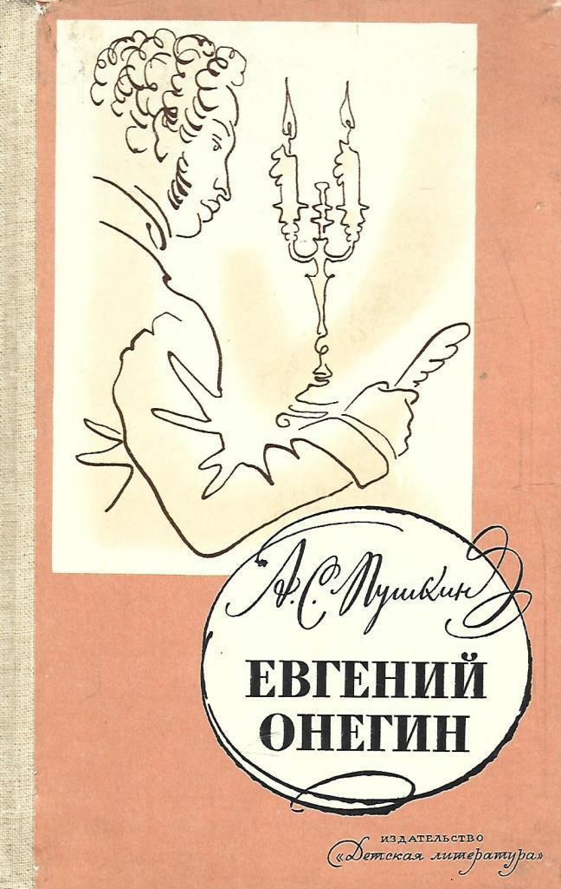

Евгений Онегин
Описание
Роман в стихах «Евгений Онегин» — самое известное и самое значительное произведение А. С. Пушкина, вершина русской поэзии и предмет многочисленных исследований. Пушкин начал писать роман в мае 1823 года, а закончил только осенью 1831 года, когда было написано «Письмо Онегина к Татьяне». Осенью 1823 года он сообщал друзьям: «...Я теперь пишу не роман, а роман в стихах — дьявольская разница...» Занимательный, легкий, основанный на любовной истории, переданной в манере доверительной беседы автора с читателем, и вместе с тем полный неразрешимых парадоксов и загадок. Противоречивость, многомерность, составляющие самую суть пушкинского романа, привлекают новые поколения читателей, позволяют открывать в нем новые смыслы. 19 век, дворянство, денди, дуэль, литература 19 века, несчастная любовь, нравы, поэзия, русская классика, русский быт, стихи, школьная программа
Характеристики
- Год выпуска: 2024
- Автор: Александр Сергеевич Пушкин
- Жанр: Роман в стихах
- Язык: русский
- Возрастное ограничение: 12+